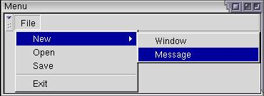
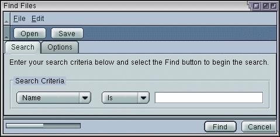

More Menu Features
In this section, we'll look at creating submenus and checked menus
Creating Submenus
You can create submenus inside other menus (nested menus) using the existing elements. Remember that you can put any element inside a menupopup. We've looked at placing menuitems and menuseparators in menupopups. However, you can create submenus by simply placing the menu element inside the menupopup element. This works because the menu element is valid even when it isn't directly placed inside a menu bar.
The example below creates a simple submenu inside the File menu:
Example 5.3.1: Source View<toolbox flex="1">
<menubar id="sample-menubar">
<menu id="file-menu" label="File">
<menupopup id="file-popup">
<menu id="new-menu" label="New">
<menupopup id="new-popup">
<menuitem label="Window"/>
<menuitem label="Message"/>
</menupopup>
</menu>
<menuitem label="Open"/>
<menuitem label="Save"/>
<menuseparator/>
<menuitem label="Exit"/>
</menupopup>
</menu>
</menubar>
</toolbox>
Adding a Find Files Menu
Let's add a menu to the find files dialog. We'll just add a few simple commands to a File menu and an Edit menu. This is similar to the example above.
<toolbox>
<menubar id="findfiles-menubar">
<menu id="file-menu" label="File" accesskey="f">
<menupopup id="file-popup">
<menuitem label="Open Search..." accesskey="o"/>
<menuitem label="Save Search..." accesskey="s"/>
<menuseparator/>
<menuitem label="Close" accesskey="c"/>
</menupopup>
</menu>
<menu id="edit-menu" label="Edit" accesskey="e">
<menupopup id="edit-popup">
<menuitem label="Cut" accesskey="t"/>
<menuitem label="Copy" accesskey="c"/>
<menuitem label="Paste" accesskey="p" disabled="true"/>
</menupopup>
</menu>
</menubar>
<toolbar id="findfiles-toolbar>
Here we have added two menus with various commands on them. Notice how the menu bar was added inside the toolbox. In the image, you can see the grippy on the menu bar that can be used to collapse the menu bar. The three dots after Open Search and Save Search are the usual way that you indicate to the user that a dialog will open when selecting the command. Access keys have been added for each menu and menu item. You will see in the image that this letter has been underlined in the menu label. Also, the Paste command has been disabled. We'll assume that there's nothing to paste.
Adding Checkmarks to Menus
Many applications have menu items that have checks on them. For example, a feature that is enabled has a check placed beside the command and a feature that is disabled has no check. When the user selects the menu, the check state is switched. You may also want to create radio buttons on menu items.
The checks are created in a similar way to the checkbox and radio elements. This involves the use of two attributes, type to indicate the type of check and name to group commands together. The example below creates a menu with a checked item.
Example 5.3.2: Source View<toolbox>
<menubar id="options-menubar">
<menu id="options_menu" label="Options">
<menupopup>
<menuitem id="backups" label="Make Backups" type="checkbox"/>
</menupopup>
</menu>
</menubar>
</toolbox>The type attribute has been added which is used to make the menu item checkable. By setting its value to checkbox, the menu item can be checked on and off by selecting the menu item.
In addition to standard checks, you can create the radio style of checks by setting the type to a value of radio. A radio check is used when you want a group of menu items where only one item can be checked at once. An example might be a font menu where only one font can be selected at a time. When another item is selected, the previously selected item is unchecked.
In order to group a set of menu items together you need to put a name attribute on each one to group. Set the value to the same string. The example below demonstrates this:
Example 5.3.3: Source View<toolbox>
<menubar id="planets-menubar">
<menu id="planet-menu" label="Planet">
<menupopup>
<menuitem id="jupiter" label="Jupiter" type="radio" name="ringed"/>
<menuitem id="saturn" label="Saturn" type="radio" name="ringed"/>
<menuitem id="uranus" label="Uranus" type="radio" name="ringed"/>
<menuitem id="earth" label="Earth" type="radio" name="inhabited"/>
</menupopup>
</menu>
</menubar>
</toolbox>If you try this example, you'll find that of the first three menu items, only one can be checked. They are grouped together because they all have the same name. The last menu item, Earth, is not part of the group because it has a different name. However, it is a radio button.
Of course, the grouped items all have to be within the same menu. They don't have to be placed next to each other in the menu, although it doesn't make as much sense if they aren't.
(Next) Next, we'll find out how to create popup menus.